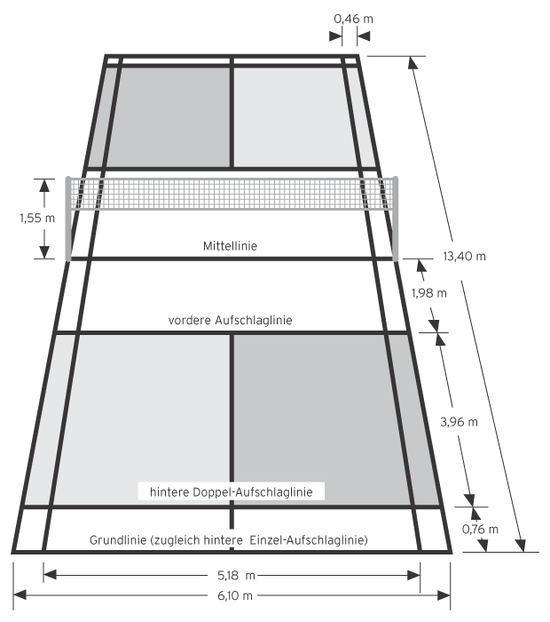

Historia
Trudno jest jednoznacznie określić genezę badmintona na świecie. W pozostałościach dawnej cywilizacji azteckiej i chińskiej spotyka się rysunki, przedstawiające grę przypominającą badminton, co świadczy o tym, iż w różnej postaci ta forma aktywności fizycznej była znana od wielu tysięcy lat prawie na wszystkich kontynentach. Nazwa gry pochodzi od nazwy angielskiej posiadłości (Badminton House) VIII księcia Beaufort, leżącej w hrabstwie Gloucestershire niedaleko Bristolu, która nazywała się właśnie Badminton. To tam około roku 1870 odbył się pierwszy pokaz gry opartej na podbijaniu rakietką lotki wykonanej z korka i piór z zastosowaniem reguł zbliżonych do współczesnych. Po kilku latach przyjęto jednolity zbiór przepisów gry, w których do dzisiaj niezmienne pozostały długość i szerokość boiska (w rzeczywistości były to wymiary salonu, w którym odbył się pierwszy pokaz) oraz wysokość siatki. Z biegiem czasu gra stawała się coraz bardziej popularna. Zyskała sympatię nie tylko w gronie amatorów, lecz także i profesjonalistów. Z tego to właśnie powodu powołano Międzynarodową Federację Badmintona (MFB). Na świecie badminton najbardziej popularny jest w krajach wschodniej Azji (Chiny, Japonia, Korea itd.) oraz w Danii. W Europie, oprócz Danii, jego główne ośrodki znajdują się w Wielkiej Brytanii, Niemczech i Szwecji. Odbywające się co roku Mistrzostwa świata w badmintonie po raz pierwszy zostały rozegrane w szwedzkim Malmö w 1977 roku. Oprócz indywidualnych mistrzostw świata rozgrywane są również drużynowe mistrzostwa mężczyzn (Thomas Cup) oraz kobiet (Uber Cup).
